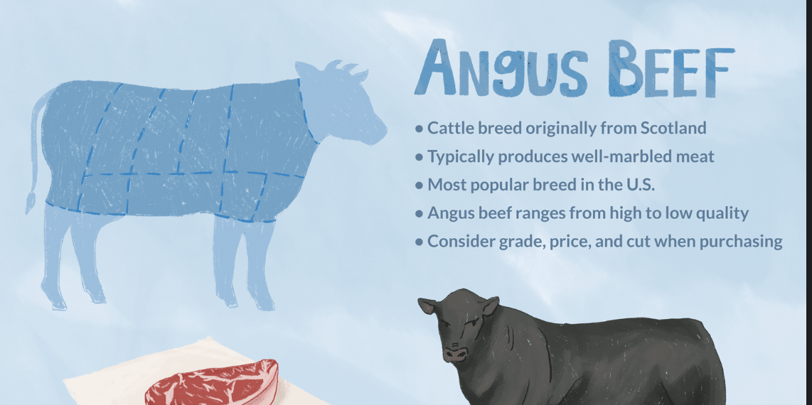

What is a traditional American steak?
The traditional American steak is one of the most famous dishes known for its exquisite taste hence it is periodically consumed through fine dining. The difference in fine dining steak and a TV dinner steak is very apparent. This recipe will exemplify the celestial yet distinct taste of a steak.
Ingredients
1.) 6 mushrooms - This ingredient is the base flavor of the sauce.
2.) butter - Butter is the best ingredient to cook beef in because it really illustrates the steak's falvor in bold.
3.) 3 garlic cloves - This ingredient will be vital for the mushroom sauce.
4.) 1 tablespoon of mustard - This is a traditional American ingredient often used with fast food, in this case, it will be used for the mushroom sauce.
5.) 1 cube of chicken broth - This ingredient is very important for the mushroom sauce because it will make it creamy.
6.) 1/2 a bowl of cream - Like broth, this ingredient will help make the mushroom sauce more creamy.
7.) salt and pepper - Salt and pepper will be used to marinate the steak before cooking it in butter.
8.) angus beef steak - The highest quality beef to cook a traditional American steak is angus beef, some may argue Wagyu is a better cut, however, it is of Japanese origin whilst angus is of American.
1 onion - It is an important ingredient of the mushroom sauce as it's caramalized flavor will complement the taste of the mushrooms.
Steps
1.) To make the mushroom sauce you melt 3 tablespoons of butter into a pan.
2.) Then add the diced garlic and diced onion, keep tossing and stirring for about a minute.
3.) Now add the mushrooms and toss them around untill they become brown. Then add the broth, cream, mustard, salt, and 1 teaspoon of crushed ground pepper into the pan and keep stirring for 5 to 8 minutes.
4.) Stop the flame and let the sauce sit in the pan, then bring out another pan for your steak.
5.) Rub salt and pepper into your angus beef steak, then add it to the pan with 1 tablespoon of butter.
6.) Keep washing the beef with the butter from the pan and cook to your liking (rare, medium rare, well done, etc.).
7.) Once the steak is done (cook to your liking rare, medium rare, well done) cut it up and add it to the pan with the mushroom sauce and cook for 1 or 2 minutes and your ready to eat.
Angus beef cut
Ingredients